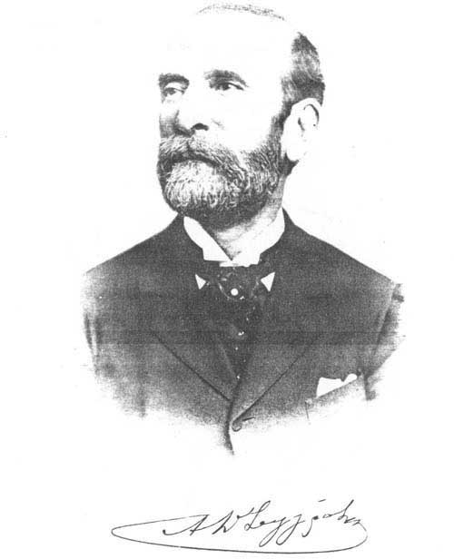

| Μέγας εθνικός ευεργέτης. Γεννήθηκε στην Κων/πολη το 1830 και πέθανε στην Αθήνα το 1899. Με την επιχειρηματική του δραστηριότητα απέκτησε μεγάλη περιουσία και επιδόθηκε σε σπουδαίο φιλανθρωπικό έργο. Προσέφερε στον ελληνικό λαό σειρά εκπαιδευτηρίων σε πολλές πόλεις, συνέβαλε στην ανέγερση του Δημοτικού Θεάτρου Αθηνών, νοσοκομείων στη Θεσσαλονίκη και των αρχαιολογικών μουσείων Δελφών και Ολυμπίας. Με τη διαθήκη του κληροδότησε μεγάλα ποσά στο θεραπευτήριο "Ευαγγελισμός", στο Πτωχοκομείο Αθηνών, στο Δημοτικό Βρεφοκομείο και σε πολλά άλλα ιδρύματα.
Με ειδικό κληροδότημά του ιδρύθηκε και το ομώνυμο νοσοκομείο αντιμετώπισης μεταδοτικών νοσημάτων στην Αθήνα. Ο Δήμος Αθηναίων για να τον τιμήσει έδωσε το όνομά του σε μεγάλη λεωφόρο που αποτελεί την είσοδο της πόλης.
|  |